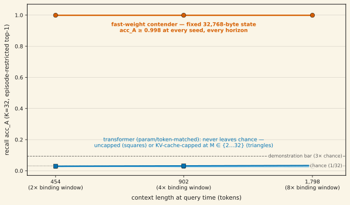

The fast-weight recall separation was measured at the binding window itself. This note asks what happens to that recall as the context grows while the model's memory does not. A 14M-parameter fast-weight matrix-state model whose entire recurrent memory is a fixed 32,768 bytes — two 64×64 fp32 matrices, constant in context length — binds K = 32 key→value pairs, then answers a query after the episode is embedded in progressively longer contexts. Result: episode-restricted top-1 recall acc_A ≥ 0.998 at every training seed at every tested horizon — 454, 902, and 1,798 tokens, i.e. 2×, 4×, and 8× the binding window. The param/token/compute-matched transformer reads chance (≈0.03) at every horizon with an uncapped KV cache, and capping its cache at M ∈ {1, 2, 4, 8, 16, 32} slots does not move it. Because the baseline never demonstrates the task even uncapped, the pre-registered degenerate-baseline clause fired: no memory-multiplier number is claimed. The verdict of record is "baseline non-competitive at matched params/tokens." Unpublished.
01Setup: the memory-matched question
The head-to-head campaign's second pre-registered axis asks an inference-memory question: at equal memory bytes, how far can each architecture carry an episodic binding? The two arms come from the same frozen 27-cell sweep as the recall-separation verdict — three fresh training seeds each, matched at 14M parameters, identical token/step budgets, identical pinned eval episodes:
- Contender: the two-block DeltaNet-family fast-weight LM. Its recurrent state is two 64×64 fp32 matrices — 32,768 bytes, fixed, no growth with context length.
- Transformer: the GPT-2-style matched baseline. Its KV cache grows linearly with context; the protocol evaluates it both uncapped (full attention over everything) and with a sink+FIFO cache cap at M ∈ {1, 2, 4, 8, 16, 32} retained positions — the M* walk, designed to find the cache size at which the transformer's recall crosses below the fast-weight arm's.
Each eval episode binds K = 32 pairs, then continues with distributionally-matched filler before the query, so the query arrives at a context of 454 / 902 / 1,798 tokens (2× / 4× / 8× the binding window). The metric is the same acc_A as the recall verdict: episode-restricted K-way top-1 through each arm's own LM head — the model's own continuation, no probe. Chance = 1/32 ≈ 0.031; demonstration bar = 3× chance. This stage was eval-only (0.26 GPU-h): all checkpoints come from the already-verified sweep, loaded under md5 provenance pinning.
02The horizon table

| arm (per-seed acc_A, s0/s1/s2) | 454 tok (2×) | 902 tok (4×) | 1,798 tok (8×) |
|---|---|---|---|
| contender — fixed 32,768-byte state | 1.000 / 0.998 / 0.999 | 1.000 / 0.998 / 0.999 | 1.000 / 0.998 / 0.999 |
| transformer, uncapped KV cache | 0.029 / 0.030 / 0.029 | 0.031 / 0.033 / 0.030 | 0.036 / 0.031 / 0.034 |
| transformer, capped M = 32 | 0.029 / 0.030 / 0.031 | 0.022 / 0.021 / 0.032 | 0.022 / 0.025 / 0.029 |
| transformer, capped M = 2 | 0.021 / 0.024 / 0.030 | 0.026 / 0.027 / 0.033 | 0.022 / 0.026 / 0.029 |
The recall demonstrated at the binding window does not decay when the episode is buried in a context 8× longer — at any seed. The per-M paired gap CIs at the decision horizon (902 tokens) all have lower bounds ≥ 0.958 against a pre-registered 0.20 crossover margin; no straddle anywhere, no seed extension triggered. M = 4, 8, 16 rows sit between the two capped rows shown and are in the archived table.
03Why there is no memory-multiplier number
The pre-registered plan was a crossover walk: cap the transformer's KV cache at shrinking M and find M* — the cache size where its recall drops below the fast-weight arm's, yielding a "the fixed state is worth an M*-slot cache" multiplier. The walk's arithmetic lands on the strongest possible tier (every capped M is cleanly non-rejected; the bare walk reads M* = ∞). We do not claim that. The registration carried a degenerate-baseline clause for exactly this outcome: if the uncapped transformer itself fails the demonstration bar at the primary cell, the walk is vacuous — every cap is "cleared" trivially because there was never any recall to lose — and no M* tier, no "confirmed no-crossover," and no multiplier may be certified. The clause fired: the uncapped reads are 0.027/0.029/0.029. The harvest code applies the clause mechanically; its own negative test confirms the same data without the clause would have certified a (spurious) strongest-win.
The verdict of record is therefore: baseline non-competitive at matched params/tokens. That is itself a capability-separation datum — at this matched budget, full attention did not learn the task at all — but it is a statement about this budget and training recipe, not about transformers in general, and not a memory-capacity ratio.
04Forced locality does not rescue the baseline
One live hypothesis from the sweep harvest was that capping might help the transformer — a hard cache cap forces attention onto recent positions, which could act as a locality prior on a task where full attention diffuses. The answer is no: at every M ∈ {1, 2, 4, 8, 16, 32} and every horizon, the capped reads sit at or below the uncapped read, and all are NO-RECALL. Per the frozen rule, differences between NO-RECALL arms are chance-level noise ordering and are never interpreted as separation.
05Caveats — read before citing
- No multiplier, by design. Anyone quoting this note should quote the verdict of record — "baseline non-competitive at matched params/tokens" — never an M* value or an "infinite memory advantage." The comparative instrument was degenerate; section 03 is the whole story.
- The matched-budget caveat. The transformer read is at matched params, tokens, and compute at 14M scale, with an LR grid frozen at calibration. A larger, longer-trained, or differently-tuned transformer learns MQAR-style tasks; this result does not extend beyond its matched setting without a matched re-run.
- The Nichani caveat. "Recall" is episode-restricted K-way top-1 under argmax decoding through the model's own continuation, and under argmax a rank-1 state can support ≈d associations (Nichani, Lee & Bietti, ICLR 2025, arXiv:2412.06538). Nothing here is a storage-capacity, rank, or continuous-recovery claim.
- Single-hop recall only (task 1). The campaign's multi-hop task 2 is disclosed wherever it is named: it is a trainability/seed-variance problem, not a demonstrated capability — 3 of 9 contender seeds reach 10–15× chance while 6 sit at chance and 0 of 9 ablation seeds ever leave it, and all three bar-clearing seeds collapse back to ≈0.01 under the horizon extension used here. Task 2 contributes nothing to this note's claim.
- Horizons tested to 1,798 tokens. "Holds at 8×" is the measured envelope, not an asymptote. Longer horizons are future work.
- Fixed-state bytes are architecture-native, not equalized. The 32,768-byte figure is the contender's own state size. The capped-transformer arm varies its cache from below to well above that byte count; the comparison the protocol licenses is the crossover walk, which section 03 explains is vacuous here.
06Reproducibility
The full artifact set is archived under experiment-runs/2026-07-10_h2h_mstar/: 90 fan-out eval JSONs, the contender/uncapped/M=1 reference JSONs, MSTAR_VERDICT.json (every number above), checkpoint maps, all stage logs, and the md5 manifest (96/96 verified at publication). Checkpoints are the audited 27-cell sweep's _r4.pt files (experiment-runs/2026-07-10_h2h_sweep_harvest/), loaded under md5 provenance pinning. The figure-generation script is assets/plots/generate_constant_memory_recall.py, which reads the archived verdict JSON directly. Realized compute: 0.26 GPU-h, eval-only.
References
- Nichani, E., Lee, J. D., & Bietti, A. (2025). Understanding Factual Recall in Transformers via Associative Memories. ICLR 2025, arXiv:2412.06538
- Yang, S., Kautz, J., & Hatamizadeh, A. (2024). Gated Delta Networks: Improving Mamba2 with Delta Rule. arXiv:2412.06464